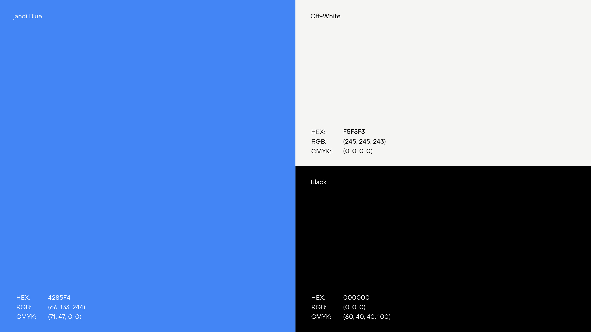
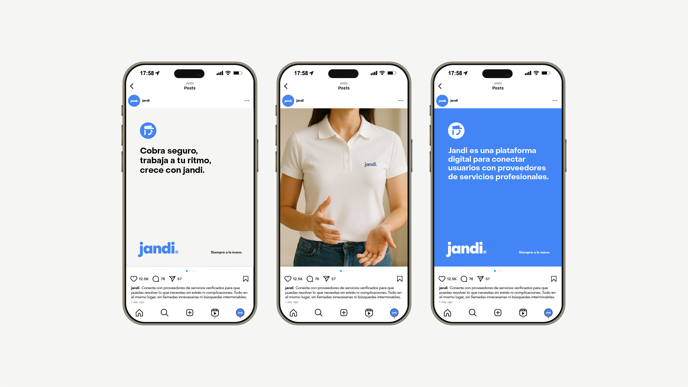
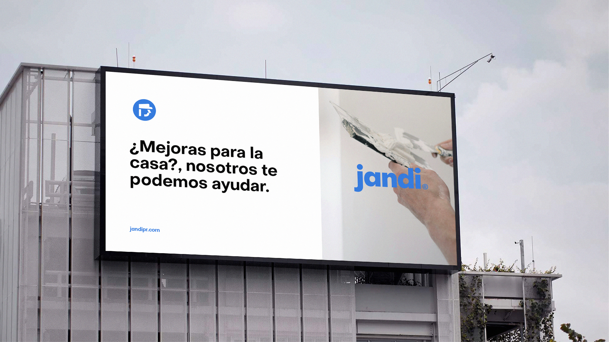

Jandi
Developed a design system to convey simplicity and modernity, while preserving the company’s heritage and brand equity. Digital technology is a growing segment of Mastercard’s business, and it needed an identity that would help position the brand as a forward-thinking, people-centered technology company.


